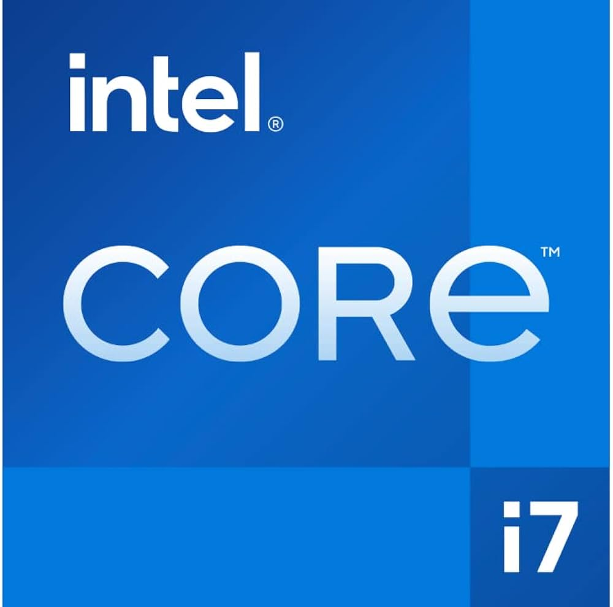

PC自作録 1.マザーボード購入

なんとなくパソコンが欲しくなったので自作しようと思った。
ちなみに今まではASUSのBR1100FKAというタブレットPCで凌いでたが、流石にCPUがceleron N4500(最大2.80GHz)なので
ちょっと厳しいかなと思ってきた（特にyoutube鑑賞とかvscCodeとか）。
動画の編集なんかも一応は可能（ymm4普通に動く）だけどせっかくならデスクトップのパソコンがほしい。
というわけで現時点での構成はこんな感じにしようと思っている
CPU intel core i7 12700K
GPU RTX 4060
メモリ DDR4 16GB ×2
電源 700W
マザボ tuf gaming Z690 plus wifi d4
ケース 未定
これを見ておそらく賢明なる自作erの皆さんはいろいろ思うことがあるだろう
例えば「グラフィックボードを使うならCPUは12700KFでええやん！」とか「今更12世代？」とか
「ケースくらいちゃんと考えろ」とか「用途は？用途は？」とかね。
これに関しては後ほど。
用途
PCを組むうえで重要（かもしれない）な用途。
主は軽く動画編集と東方原作ができればいいと思っている。
ちなみに、両方今のタブレットPCでやろうと思えば可能なので、要するに今のタブレットPC以上のスペックであれば問題ない。
・・・というわけだ
選定理由
そもそもなぜこのパーツを選んだのかについて
CPU

core i7 12700Kを選んだ理由は以下の通り
K付きモデル（OC対応）だから 要するにロマンだよね。オーバークロックはしないけど
なんとなくスペックが高いCPUがほしいから 本当はi5くらいでも十分、なんならi3でいい
i9だと流石にオーバースペックだから 高いし熱いし
intel信者だから intel最高だってはっきりわかんだね
13、14世代の不具合が怖いから intel信者でも不具合は怖い。
用途から考えると動画編集にはちょうど良いんじゃないか？東方原作にはオーバースペックだが
GPU
RTX4060を選んだ理由は価格の手頃さとコンパクトなモデルが多いことである。４万円台で入手できるのがでかい。
FPSゲームはやらないと思うのでこのくらいで良いと思った。
なお、グラフィックボードは後回しにするのでCPUにグラフィック機能があるもの(Fなし)をセレクトした。
メモリ
なぜ32GBのメモリを選んだかといえば実用性とロマンである。
別に16GBでも良いとは思うのだが16GB×2のメモリも最近は１万円を切っているのでどうせなら、ね？
動画編集にもちょうどいいと思う。
電源
今回は700Wの電源を選んだ。電源容量的にはちょうどいいかも。
メーカーの指定は特に無いが、怪しいメーカーは避けたい。燃えるのやだー